SO 05 · Verde Slaný II
bytový dům, 2. etapa
3D model podle projektové dokumentace a areálové situace – ilustrační
Projít se odsud
Prohlídka bytu 3+kk
VERDE II · 3D prohlídka
➜
Prohlídka mezonetu
Byty Borovského · 3D prohlídka
➜
Hotový dům
Hrubá stavba
Růst po podlažích
Podlaží
1. PP
1PP
1NP
2NP
3NP
4NP
5NP
hotovo
Projít se kolem domu
Noc
Prohlídka bytu
VERDE II
Prohlídka mezonetu
Další etapy
SO 01 · 03 · 04
← Zpět na model
Noc
Otáčení jedním prstem · přiblížení dvěma prsty

VSTOUPIT DO BYTU
Typový byt 3+kk, 3. NP · 3D prohlídka
← Zpět ven
Načítám 3D model…